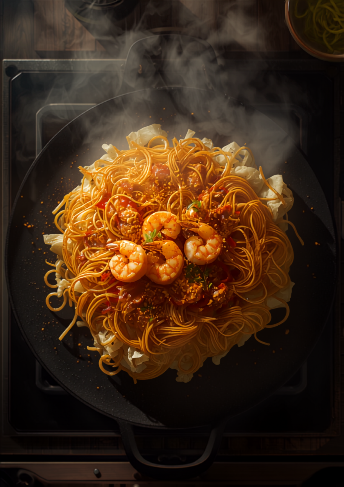
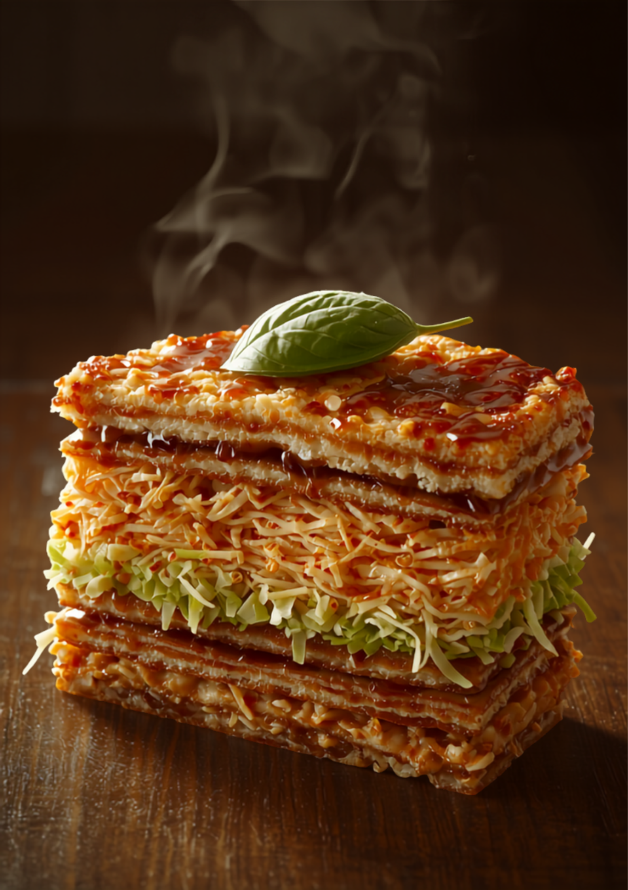

生麺をしっかり焼き上げるから、他店とは圧倒的に違う。一枚の中に重なる、五つの層の物語。

ずっと気になっていた姪浜の暖氣。焼きそばの焼き加減に、まず感動します。生麺をしっかり焼いているから、表面が驚くほどパリッパリで香ばしく、中のモチモチした食感との対比が最高。
お好み焼きは一見して差を出しにくいもの。それなのに、他店とは圧倒的に違う美味しさを出しています。本場・広島で食べていたお好み焼きと、全く引けを取りません。
凄く、凄く丁寧に焼いてらっしゃる。お好み焼き愛を感じました。
「大葉が入ってるのは初めて！」——パリ麺サンドの食感は一口食べてホントびっくり。他の鉄板焼き料理も、何を食べても美味しい。
広島がんす、牡蠣鉄板、海鮮お好み焼き、締めのガーリックライスまで。ビールにも日本酒にも合う一品が並びます。

麺のパリパリ感なんて最高です。お好み焼きは差を出しにくいように思えますが、他店とは圧倒的に違う美味しさ。本場の広島と全く引けを取らない味です。
大葉が入ってるのは初めてでした！めちゃ良いですね！！パリ麺サンドの食感は一口食べてホントびっくりで、また今すぐ食べたいです。
凄く丁寧にお好み焼きを作ってらっしゃるところをずっと見てました。お好み焼き愛を感じました。ボリュームたっぷり！必ずまた行きます。